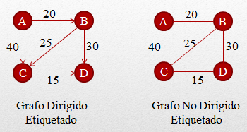

¿Qué es un Grafo?
En primera instancia debemos entender que es un grafo. Un grafo es una composición de un conjunto de objetos conocidos como nodos que se relacionan con otros nodos a través de un conjunto de conexiones conocidas como aristas. <<<<<<< HEAD ======= Los grafos permiten estudiar las relaciones que existen entre unidades que interactúan con otras. Podemos representar diversas situaciones o elementos con grafos. Estos son extraordinariamente útiles en situaciones complejas, es por esto, que es común conseguir la implementación de análisis de grafos en estudios de ciencias exactas, ciencias sociales y en aplicaciones informáticas. Veamos a continuación los tipos de grafos que podemos implementar.
Existen definiciones que debemos conocer a profundidad, para entender las amplias posibilidades que nos brindan los grafos para estudiar relaciones entre diferentes tipos de información. En primer lugar debemos conocer es la composición exacta de un grafo y algunos conceptos asociados. >>>>>>> 17f6f6d21e77370e4cb50fd61627e9886d084588 Un grafo en su totalidad es un par ordenado compuesto por vértices (v) y aristas (e); donde en la gran mayoría de los casos los vértices son de cuantificación finita. El número de vértices que componen al grafo, son las que conocemos como orden. Existe también el concepto de grado que se corresponde al número de arcos al que pertenecen de forma externa y en cuanto a las aristas también conseguimos el concepto de bucle que no es más que una arista relacionada de diversas formas con el mismo nodo. Teniendo claros estos conceptos, podemos empezar a profundizar en las definiciones de tipos de grafos. Existen diversos tipos de grafos, analizaremos en esta oportunidad los esquemas de grafos más conocidos como son los grafos dirigidos, no dirigidos y etiquetados.
Tipos de Grafos
Grafo dirigido |
Grafo no dirigido |
|---|---|
|
Un grafo dirigido conocido también como dígrafo consta de un conjunto de vértices y aristas donde cada arista se asocia de forma unidireccional a través de una flecha con otro. Las aristas dependiendo de su salida o ingreso reciben la calificación de entrante o saliente, la condición común, es que siempre tienen un destino hacia un nodo. |
Los grafos no dirigidos son aquellos que constan un conjunto de vértices que están conectados a un conjunto de aristas de forma no direccional. Esto significa que una arista puede indistintamente recorrerse desde cualquiera de sus puntos y en cualquier dirección. |
Grafos etiquetados o ponderados
Esta clasificación es denominada como grafos etiquetados o grafos dirigidos con pesos. Este tipo de grafos concentran aristas que pueden poseer información adicional donde podemos reflejar nombres, costos, valores u otros datos. Estos grafos también son denominados como redes de actividad y el número asociado al arco, se le denomina factor de peso. Este grafo es el que más comúnmente utilizamos para representar situaciones de la vida real.
